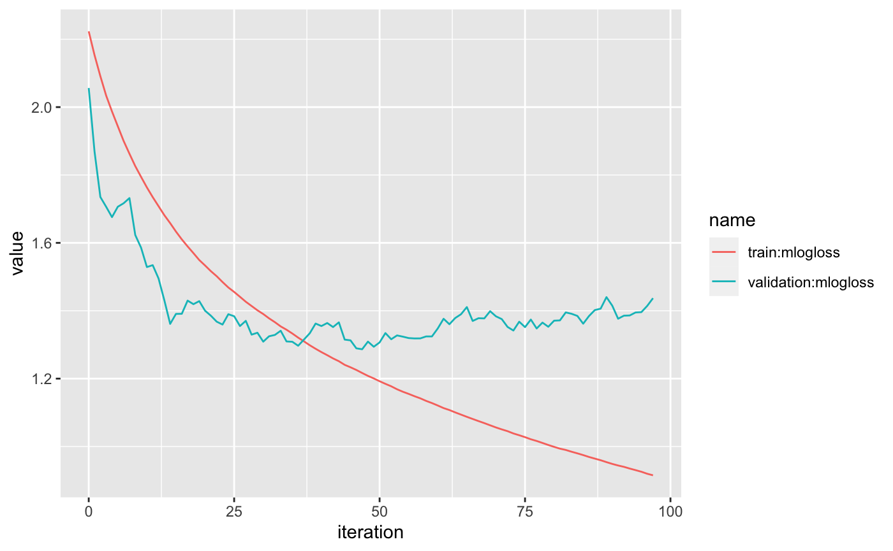

load-model.RmdSagemaker is great for training, but sometimes you don’t want the overhead (cost and time) of predict.sagemaker or batch_predict.
Luckily, AWS Sagemaker saves every model in S3, and you can download and use it locally with the right configuration.
For xgboost models (more to come in the future), I’ve written sagemaker_load_model, which loads the trained Sagemaker model into your current R session.
Let’s use the sagemaker::abalone dataset once again, but this time let’s try classification instead of regression.
First we’ll identify the classes with the highest frequency, so we can eliminate the low-variance ones.
library(sagemaker)
library(dplyr)
#>
#> Attaching package: 'dplyr'
#> The following objects are masked from 'package:stats':
#>
#> filter, lag
#> The following objects are masked from 'package:base':
#>
#> intersect, setdiff, setequal, union
library(rsample)
#> Loading required package: tidyr
library(recipes)
#>
#> Attaching package: 'recipes'
#> The following object is masked from 'package:stats':
#>
#> step
library(ggplot2)
top_rings <- sagemaker::abalone %>%
group_by(rings) %>%
summarise(n = n()) %>%
arrange(desc(n)) %>%
top_n(10)
#> Selecting by n
top_rings
#> # A tibble: 10 x 2
#> rings n
#> <dbl> <int>
#> 1 9 689
#> 2 10 634
#> 3 8 568
#> 4 11 487
#> 5 7 391
#> 6 12 267
#> 7 6 259
#> 8 13 203
#> 9 14 126
#> 10 5 115We’ll use recipes to transform the dataset into the proper format for xgboost. We must ensure that:
rec <- recipe(rings ~ ., data = sagemaker::abalone) %>%
step_filter(rings %in% top_rings$rings) %>%
step_integer(all_outcomes(), zero_based = TRUE) %>%
prep(training = sagemaker::abalone, retain = TRUE)
abalone_class <- juice(rec) %>%
select(rings, everything())
abalone_class %>%
group_by(rings) %>%
summarise(n = n()) %>%
arrange(n)
#> # A tibble: 10 x 2
#> rings n
#> <dbl> <int>
#> 1 0 115
#> 2 9 126
#> 3 8 203
#> 4 1 259
#> 5 7 267
#> 6 2 391
#> 7 6 487
#> 8 3 568
#> 9 5 634
#> 10 4 689Then we’ll split into test/validation and upload to S3 for training.
Frist, we need to set the xgboost hyperparameters for multiclassification. See here for the official list of xgboost parameters.
xgb_estimator <- sagemaker_xgb_estimator()
#>
#>
#> You are not in a sagemaker hosted notebook.
#> Pulling local role in ~/.aws/config
xgb_estimator$set_hyperparameters(
eval_metric = "mlogloss",
objective = "multi:softmax",
num_class = 10L
)objective = "multi:softmax" will return the predicted class, while objective = "multi:softprob" returns a tibble with probabilities for each class1.
Next, we’ll set some ranges to tune over and start training.
ranges <- list(
max_depth = sagemaker_integer(3, 20),
colsample_bytree = sagemaker_continuous(0, 1),
subsample = sagemaker_continuous(0, 1)
)Now we can download the Sagemaker model artifact from S3 and load it into the R session.
For xgboost Sagemaker models, sagemaker_load_model loads a Booster object from the xgboost Python package:
To use this feature, you must have the xgboost Python package installed. You can download and install it with
The Sagemaker R package loads the Booster object into the R session with reticulate. Therefore, all methods and attributes are available in R.
#> [1] "_validate_features" "attr"
#> [3] "attributes" "best_iteration"
#> [5] "best_ntree_limit" "best_score"
#> [7] "boost" "booster"
#> [9] "copy" "dump_model"
#> [11] "eval" "eval_set"
#> [13] "feature_names" "feature_types"
#> [15] "get_dump" "get_fscore"
#> [17] "get_score" "get_split_value_histogram"
#> [19] "handle" "load_model"
#> [21] "load_rabit_checkpoint" "predict"
#> [23] "save_model" "save_rabit_checkpoint"
#> [25] "save_raw" "set_attr"
#> [27] "set_param" "trees_to_dataframe"
#> [29] "update"However, you need to know the xgboost Python package to work with the local model.
The sagemaker R package also includes predict.xgboost.core.Booster to help you easily make predictions on this object:
pred <- predict(xgb, abalone_class[, -1])
glimpse(pred)
#> Observations: 3,739
#> Variables: 1
#> $ .pred <dbl> 2, 4, 4, 2, 2, 4, 8, 3, 4, 4, 5, 7, 2, 2, 2, 2, 2, 5, 4, 4…This method returns predictions in tibbles, and it attempts to conform to the tidymodel standard.
Unfortunately, at the moment type ("class" or "prob") cannot be supported.
If you want both probability and class predictions, I recommend you default to objective = "multi:softprob" or objective = "binary:logistic" for probabilities and convert to outcomes after the predictions are returned.
Next, we can map the data and predictions back to the true values:
ring_map <- tidy(rec, 2) %>%
unnest(value) %>%
select(rings_integer = integer, rings_actual = value)
rings_actual <- abalone_class %>%
left_join(ring_map, by = c("rings" = "rings_integer")) And calculate the confusion matrix:
table(pred = rings_pred$rings_actual, actual = rings_actual$rings_actual)
#> actual
#> pred 5 6 7 8 9 10 11 12 13 14
#> 5 79 16 11 3 1 0 0 0 0 0
#> 6 21 147 34 21 8 1 1 2 1 0
#> 7 13 71 255 70 36 22 14 3 6 2
#> 8 2 15 61 315 90 44 19 11 9 6
#> 9 0 8 25 111 431 123 80 49 27 17
#> 10 0 0 4 35 69 375 73 62 31 30
#> 11 0 1 1 10 43 53 283 35 35 16
#> 12 0 0 0 1 3 8 10 92 3 4
#> 13 0 1 0 2 7 7 7 10 90 13
#> 14 0 0 0 0 1 1 0 3 1 38We can also see the model fit:
logs <- sagemaker_training_job_logs(tune$model_name)
logs %>%
pivot_longer(`train:mlogloss`:`validation:mlogloss`) %>%
ggplot(aes(iteration, value, color = name)) +
geom_line()
For fun, let’s also see train a model using objective = "multi:softprob" for comparsion.
xgb_estimator2 <- sagemaker_xgb_estimator()
#>
#>
#> You are not in a sagemaker hosted notebook.
#> Pulling local role in ~/.aws/config
xgb_estimator2$set_hyperparameters(
eval_metric = "mlogloss",
objective = "multi:softprob",
num_class = 10L
)tune2 <- sagemaker_hyperparameter_tuner(
xgb_estimator2, s3_split(train_path, validation_path), ranges, max_jobs = 5
)tune2
#> Name: sagemaker-xgboost-191201-2049-005-a115b6b5
#> Tuning Strategy: Random
#> Evaluation Metric: mlogloss , 1.40881
#>
#> Best hyperparameters:
#> colsample_bytree subsample max_depth
#> 1 0.906 0.672 16pred2 <- predict(xgb2, abalone_class[, -1])
glimpse(pred2)
#> Observations: 3,739
#> Variables: 10
#> $ .pred_0 <dbl> 0.021558676, 0.011293630, 0.010710401, 0.019016407, 0.01…
#> $ .pred_1 <dbl> 0.17314099, 0.01839421, 0.02251971, 0.15380934, 0.020601…
#> $ .pred_2 <dbl> 0.61966711, 0.01386215, 0.05297577, 0.72650898, 0.686832…
#> $ .pred_3 <dbl> 0.03697968, 0.04486087, 0.09038249, 0.03128297, 0.122178…
#> $ .pred_4 <dbl> 0.03868733, 0.62501806, 0.70947081, 0.01891461, 0.058164…
#> $ .pred_5 <dbl> 0.03771019, 0.11568346, 0.03889939, 0.01147735, 0.018013…
#> $ .pred_6 <dbl> 0.02170349, 0.05026899, 0.02544681, 0.01027075, 0.027434…
#> $ .pred_7 <dbl> 0.015020613, 0.072794594, 0.019079974, 0.009080383, 0.01…
#> $ .pred_8 <dbl> 0.019516161, 0.030553145, 0.015705083, 0.010099456, 0.02…
#> $ .pred_9 <dbl> 0.016015753, 0.017270876, 0.014809566, 0.009539749, 0.01…In this case, the outcome is a tibble with an associated probability for each class.
Then we can derive the predicted class by finding the class with the highest probability for each row (variable) of the tibble.
pred2_class <- pred2 %>%
mutate(variable = row_number()) %>%
pivot_longer(
.pred_0:.pred_9, names_to = c("name", ".pred"),
names_sep = "_", names_ptypes = list(name = character(), .pred = numeric())
) %>%
group_by(variable) %>%
filter(value == max(value)) %>%
ungroup() %>%
select(.pred)
glimpse(pred2_class)
#> Observations: 3,739
#> Variables: 1
#> $ .pred <dbl> 2, 4, 4, 2, 2, 4, 9, 5, 4, 4, 5, 7, 2, 4, 5, 2, 6, 5, 7, 4… You can also use eval_metric = "merror", although "mlogloss" is usually better in practice.↩